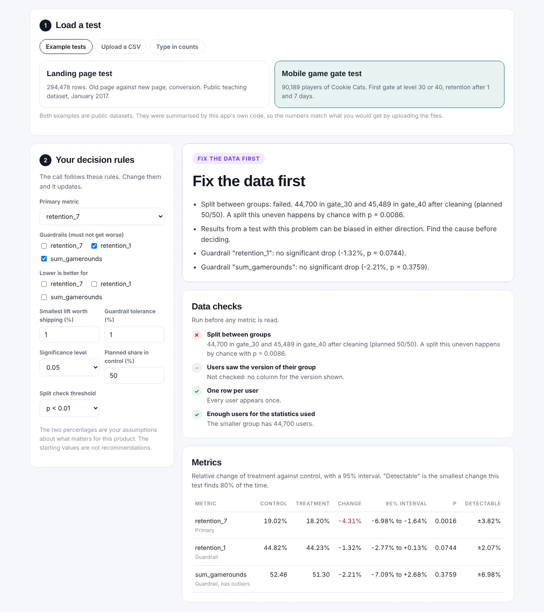

The question
Can a readout stop a team from shipping, or killing, a change on numbers it should not trust? And can the rules behind the call be written down instead of living in someone's head?

Approach
- Checks before metrics: the split between groups against the plan, users who saw the wrong version, users who appear more than once, sample size, and outliers.
- Rules as inputs: the smallest lift worth shipping, the guardrail tolerance, the significance level and the planned split. The call updates as they change.
- Four calls: fix the data first, don't ship, ship, run longer. When the answer is "run longer", the app says how many more users are needed.
- Load an example, your own CSV (read in the browser, never uploaded), or four typed counts.
Findings
The game test should not be read yet
In the Cookie Cats test (90,189 players), the groups are 44,700 and 45,489. With a planned 50/50 split, a gap this large happens by chance with p = 0.0086, so the call is "fix the data first". Ignoring that check, retention after 7 days fell from 19.02% to 18.20% (p = 0.0016). That drop is real only if the split problem has a harmless cause.
The landing page test is a clear "don't ship"
3,893 rows showed the wrong page and 3,894 users appeared more than once. After removing them, conversion was 12.02% for the old page and 11.87% for the new one (p = 0.23). The 95% interval, −3.18% to +0.77%, rules out the 1% lift the rules ask for.
The call depends on the rules, and the app shows how
If a 0.5% lift were worth shipping, the landing page call becomes "run longer", and the test would need about 32 times as many users. Whether that is worth it is a business decision, not a statistical one.
Why the game test split is uneven
Possible causes include how players were assigned and which players were kept in the export. The dataset alone cannot say which one is true.
What I learned as a PM
- A split check that only warns gets ignored. If it fails, the call should be blocked.
- "Not significant" is not an answer. Say whether the test could have found the lift that matters.
- Writing the decision rules down is most of the value. The statistics are standard.
What I would do next
- A planner that turns a baseline and a needed lift into users and days before the test starts.
- Several treatment groups, with a correction for multiple comparisons.
- Lock the rules before the data is loaded, so they cannot be tuned after seeing the result.
Limits: one comparison per test, no sequential testing, normal approximations. The thresholds (1% lift, 1% tolerance, 5% limit for wrong versions) are my demo choices, not standards. Both datasets are public teaching data.